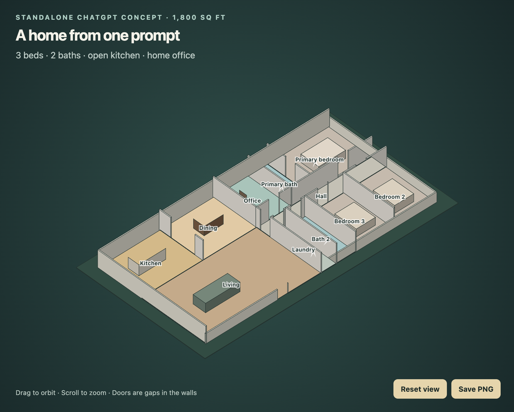

BUILD
Choose a screenshot of BUILD's 3D result
Record whether generation was live or cached.ChatGPT

Default image is exploratory. Choose a fresh result from the identical prompt for a controlled comparison.Claude
Choose the image Claude generated from CLAUDE_PROMPT.md
Run Claude in a new conversation using the same brief.